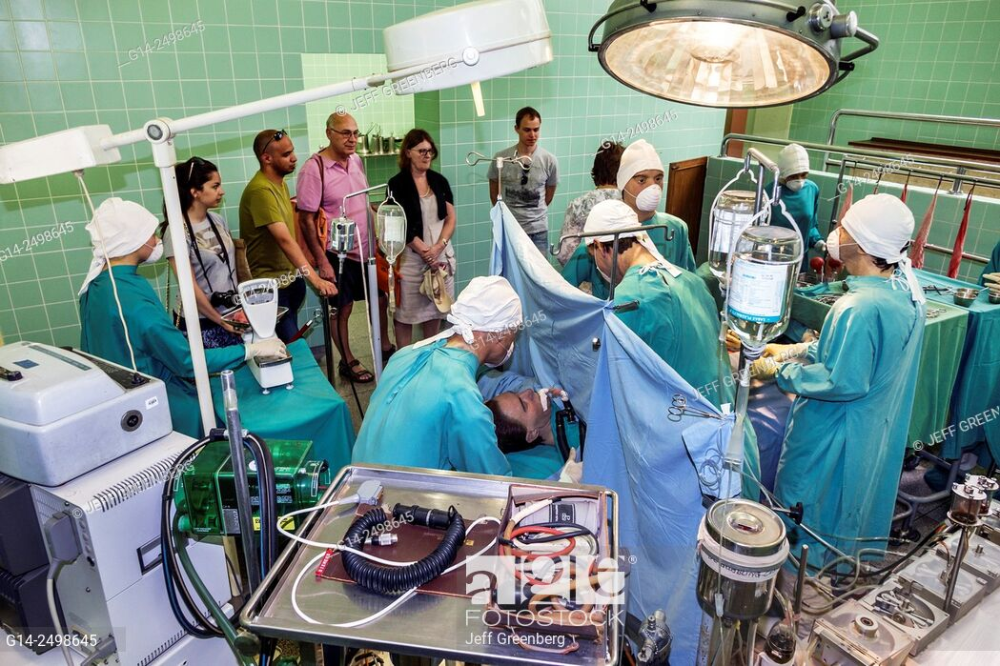
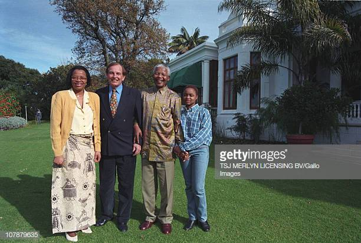
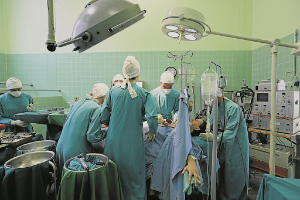

Christiaan Neethling Barnard was a South African cardiac surgeon who performed the world's first highly publicized heart transplant and the first one in which the patient regained consciousness. His father served as a missionary to mixed-race peoples. His mother, the former Maria Elisabeth de Swart, instilled in the surviving brothers the belief that they could do anything they set their minds to.
SearchBarnard performed the world's first human-to-human heart transplant operation in the early morning hours of Sunday 3 December 1967.Louis Washkansky, a 54-year-old grocer who was suffering from diabetes and incurable heart disease, was the patient.
Say whatever you like about this country, but it cannot be argued that some of the finest minds the world has ever seen come from South Africa. We’re talking about the likes of Nelson Mandela, Elon Musk, and our ‘Heartbreaker’, Dr Barnard.
Christiaan Barnard was assisted by his brother Marius Barnard. The operation lasted approximately five hours. Barnard and his patient received worldwide publicity. Barnard studied medicine and practised for several years in his native South Africa.
